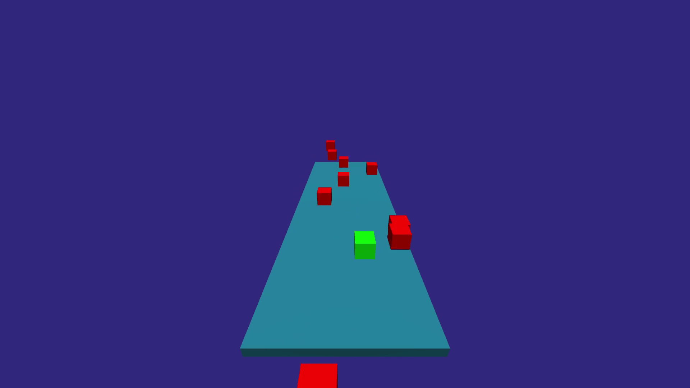
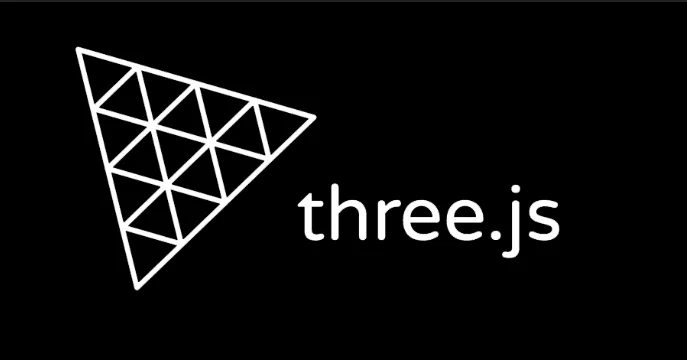

Endless Runner with Three.js
Project Overview
Inspired by games such as Subway surfers and Temple Run, I decided to make a browser-based endless runner game, built with Three.js. The ultimate goal of this project was to familiarise myself with the capabilities of Three.js.
What is an Endless Runner?

Endless runner or infinite runner is a subgenre of platform game in which the player character runs for an infinite amount of time while avoiding obstacles. The player's objective is to reach a high score by surviving for as long as possible. As mentioned, Subway surfers and Temple Run are two popular examples of this subgenre.
What is Three.js?
Three.js is a cross-browser JavaScript library and application programming interface used to create and display animated 3D computer graphics in a web browser using WebGL. In other words, it allows developers to display 3D objects on web pages with ease.
In this project, I will be using Three.js to build my endless runner game with 3D shapes. Lets now dive into the code for the project.
1. Import Three.js
import * as THREE from 'three'
import { OrbitControls } from 'three/addons/controls/OrbitControls.js'
Along with vanilla Three.JS, I will also be using the Orbit Controls Add-on, which allows users to move the camera in a free and intuitive manner.
2. Setup
const scene = new THREE.Scene()
To start, we must first create a Scene, using THREE.Scene(). A Scene allows you to setup what and where objects is to be rendered by Three.js.
const camera = new THREE.PerspectiveCamera(
85,
window.innerWidth / window.innerHeight,
0.1,
1000
);
camera.position.set(0, 6, 12);
Moving on, the camera must then be setup. We will define a Perspective Camera, using THREE.PerspectiveCamera(). This simulates a real-world camera, giving a perspective view (objects farther away appear smaller).
const renderer = new THREE.WebGLRenderer({
alpha: true,
antialias: true
});
renderer.shadowMap.enabled = true;
renderer.setSize(window.innerWidth, window.innerHeight);
document.body.appendChild(renderer.domElement);
This creates the WEBGL renderer, which is a 3D graphics API that runs in the browser. As such, THREE.WebGLRenderer() is responsible for rendering the scene from the camera’s perspective and displaying it on the screen.
Now, with all the setup out of the way, we can finally focus on creating the game itself.
3. Creating and Positioning a Directional Light
const light = new THREE.DirectionalLight(0xffffff, 1);
light.position.y = 4;
light.position.z = 1;
light.castShadow = true;
scene.add(light);
We must also add lighting in our scene, as without it, no objects can be seen. THREE.DirectionalLight()simulates light coming from a specific direction, like a floodlight.
4. Defining the Game Environment
class Box extends THREE.Mesh {
constructor(
{
width,
height,
depth,
color = '#00ff00',
velocity = { x: 0, y: 0, z: 0},
position = { x: 0, y: 0, z: 0},
zAcceleration = false,
}
)
{
Since all entities in the game are rectangular in nature, I decided to use a class to define their geometries.
The Class Box extends THREE.Mesh, meaning it inherits all the properties and methods of THREE.Mesh, which is the base class for 3D objects in Three.js. Object properties such as dimensions, colour, and velocity are defined here.
super(
new THREE.BoxGeometry(width, height, depth),
new THREE.MeshStandardMaterial({ color })
)
This creates a mesh, which is specified to have a BoxGeometry, and using the MeshStandardMaterial. The dimensions and colours will be provided later.
this.width = width
this.height = height
this.depth = depth
this.position.set(position.x, position.y, position.z)
this.updateSides()
this.velocity = velocity
this.gravity = 0.01
this.zAcceleration = zAcceleration
The width, height, and depth properties of the box are stored in the instance for later use, for collision detection. The velocity of the box, as well as the gravity, are also stored here.
Additionally, the updateSides() method calculates and updates the positions of the box's sides, to facilitate collision detection. The code in updateSides() will be discussed next.
updateSides() {
this.top = this.position.y + this.height / 2
this.bottom = this.position.y - this.height / 2
this.right = this.position.x + this.width / 2
this.left = this.position.x - this.width / 2
this.front = this.position.z + this.depth / 2
this.back = this.position.z - this.depth / 2
}
updateSides() calculates and updates the box’s boundaries in the 3D space based on its current position. This will be useful when detecting collisions with other objects.
update(ground) {
this.updateSides()
if (this.zAcceleration) this.velocity.z += 0.006
this.position.x += this.velocity.x
this.position.z += this.velocity.z
this.applyGravity(ground)
}
The update() method handles physics-related logic with updateSides(), and updates the box's position.
applyGravity(ground, player) {
this.velocity.y -= this.gravity
if (boxCollision({
box1: this,
box2: ground
})) {
this.velocity.y *= 0.2 // Reduces bounce height
this.velocity.y = -this.velocity.y // Inverts velocity for bounce
if (this === cube) {
isTouchingGround = true
}
} else {
this.position.y += this.velocity.y
if (this === cube) {
isTouchingGround = false
}
}
}
function boxCollision ({box1, box2}) {
const xCollision = box1.right >= box2.left && box1.left <= box2.right
const yCollision = box1.bottom + box1.velocity.y <= box2.top && box1.top >= box2.bottom
const zCollision = box1.front >= box2.back && box1.back <= box2.front
return xCollision && yCollision && zCollision
}
applyGravity()handles the gravity related logic. For example, it decreases the box's Y-velocity to simulate the effect of gravity (this.velocity.y -= this.gravity).
The funciton boxCollision() checks if two boxes collide by checking if they overlap in the X, Y, and Z dimensions, which is used between the player's box and an enemy box. Additionally, if the box collides with the ground, boxCollision() inverts the Y-velocity to simulate a bounce, and reduces the velocity by 80% (this.velocity.y *= 0.2) to make each bounce smaller. applyGravity() also checks if the player's cube is touching the ground, which is used to allow jumping later on in the code.
class Box extends THREE.Mesh {
constructor(
{ width,
height,
depth,
color = '#00ff00',
velocity = { x: 0, y: 0, z: 0},
position = { x: 0, y: 0, z: 0},
zAcceleration = false,
}
) {
super(
new THREE.BoxGeometry(width, height, depth),
new THREE.MeshStandardMaterial({ color})
)
this.width = width
this.height = height
this.depth = depth
this.position.set(position.x, position.y, position.z)
this.updateSides()
this.velocity = velocity
this.gravity = 0.01
this.zAcceleration = zAcceleration
}
updateSides() {
this.top = this.position.y + this.height / 2
this.bottom = this.position.y - this.height / 2
this.right = this.position.x + this.width / 2
this.left = this.position.x - this.width / 2
this.front = this.position.z + this.depth / 2
this.back = this.position.z - this.depth / 2
}
update(ground) {
this.updateSides()
if (this.zAcceleration) this.velocity.z += 0.006
this.position.x += this.velocity.x
this.position.z += this.velocity.z
this.applyGravity(ground)
}
applyGravity(ground, player) {
this.velocity.y -= this.gravity
if (boxCollision({
box1: this,
box2: ground
})) {
this.velocity.y *= 0.2 //reduces the height of every consecutive bounce
this.velocity.y = -this.velocity.y //inverts the velocity so as the bounce the object back up
if (this === cube) {
isTouchingGround = true
}
}
else {
this.position.y += this.velocity.y
if (this === cube) {
isTouchingGround = false
}
}
}
}
function boxCollision ({box1, box2}) {
const xCollision = box1.right >= box2.left && box1.left <= box2.right
const yCollision = box1.bottom + box1.velocity.y <= box2.top && box1.top >= box2.bottom
const zCollision = box1.front >= box2.back && box1.back <= box2.front
return xCollision && yCollision && zCollision
}
Here is all the code combined.
5. Creating the Player-Controlled Cube
const cube = new Box({
width: 1,
height: 1,
depth: 1,
velocity: {
x: 0,
y: -0.01,
z: 0
}
})
cube.castShadow = true
scene.add(cube)
After creating the game enviornment, we can finally create the player controlled cube! This segment of code here defines the dimensions of the player's cube, gives it gravity and shadows, and then adds it onto the scene.
But don't we need a platform for our cube to rest on?
6. Creating the Ground
const ground = new Box({
width: 7,
height: 0.5,
depth: 20,
color: '#155e75',
position: {
x: 0,
y: -2,
z: -9
}
})
ground.receiveShadow = true
scene.add(ground)
This code creates the platform for our game! Once again, we define the dimensions and position of the platform, and add it to the scene.
This is how our scene looks like now!
Let's now focus on getting the cube to move!
7. Controlling the Cube's movement
const keys = {
w: {
pressed: false
},
a: {
pressed: false
},
s: {
pressed: false
},
d: {
pressed: false
}
};
let isTouchingGround = false;
We must first create an Object to track whether certain keys (W, A, S, D) are currently pressed. Additionally, isTouchingGround tracks whether the cube is currently in contact with the ground.
window.addEventListener('keydown', (event) => {
switch(event.code) {
case 'KeyA':
keys.a.pressed = true;
break;
case 'KeyD':
keys.d.pressed = true;
break;
case 'KeyW':
keys.w.pressed = true;
break;
case 'KeyS':
keys.s.pressed = true;
break;
case 'Space':
if (isTouchingGround === true) {
cube.velocity.y = 0.2;
}
break;
}
});
With our keypress-tracking Object setup, we can now add an event listener to detect when keys are pressed down. However, our cube does not actually move yet (aside from jumping), as that will be handled at a later point in time.
window.addEventListener('keyup', (event) => {
switch(event.code) {
case 'KeyA':
keys.a.pressed = false;
break;
case 'KeyD':
keys.d.pressed = false;
break;
case 'KeyW':
keys.w.pressed = false;
break;
case 'KeyS':
keys.s.pressed = false;
break;
}
});
Conversely, we must also add an event listener to detect when keys are released.
7. The Animation Loop
function animate() {
const animationId = requestAnimationFrame(animate);
renderer.render(scene, camera);
The animate() function is the main animation loop. It updates the scene continuously, rendering each new frame and updating all objects' states.
const movementSpeed = 0.1;
cube.velocity.x = 0;
cube.velocity.z = 0;
// Z-axis
if (keys.w.pressed) {
cube.velocity.z = -movementSpeed;
} else if (keys.s.pressed) {
cube.velocity.z = movementSpeed;
}
// X-axis
if (keys.a.pressed) {
cube.velocity.x = -movementSpeed;
} else if (keys.d.pressed) {
cube.velocity.x = movementSpeed;
}
cube.update(ground);
Within animate(), cube movement is handled. cube.update(ground) updates the cube's position based on its current velocity and checks for collisions with the ground.
if (frames % spawnRate === 0) {
if (spawnRate > 10) {spawnRate -= 19}
const rand = (Math.random() * 7) - 3.5;
const enemy = new Box({
width: 1,
height: 1,
depth: 1,
position: {
x: rand,
y: 0,
z: -20
},
velocity: {
x: 0,
y: -0.01,
z: 0.05
},
color: 'red',
zAcceleration: true
});
enemy.castShadow = true;
scene.add(enemy);
enemies.push(enemy);
}
frames++;
}
This code segment is responsible for spawning enemies into the platform. It defines the properties of the enemy, such as its dimensions and colours, before adding it to the scene.
The enemy spawnrate is also defined here. if (spawnRate > 10) {spawnRate -= 19} spawns more enemies the more time elapses, making the game progressively harder.
enemies.forEach(enemy => {
enemy.update(ground);
if (boxCollision({box1: cube, box2: enemy}) || cube.position.y < -10) {
cancelAnimationFrame(animationId);
document.querySelector('.end-screen-wrapper').style.display = 'contents';
document.querySelector('.end-background').classList.add('animation-end-background');
document.querySelector('.filter').classList.add('animation-filter');
document.querySelector('#display').textContent = `You were alive for ${seconds / 100}s!`;
document.querySelector('button').addEventListener('click', () => {
location.reload();
});
}
});
This part of the code handles the enemy's interactions with the Player-Controlled box and the ground.
When the player's box collides with an enemy box or falls off the platform, an End Screen will then be displayed.
It looks like this:
const enemies = []
let frames = 0
let spawnRate = 200
let seconds = 0
setInterval(() =>{
seconds ++
}, 10)
Finally, these variables must be initialised outside the loop, as they keep track of the number of enemies, the spawnrate, and the time elapsed since starting.
Here is the animate() function as a whole:
const enemies = []
let frames = 0
let spawnRate = 200
let seconds = 0
setInterval(() =>{
seconds ++
}, 10)
function animate() {
const animationId = requestAnimationFrame(animate)
renderer.render(scene, camera)
const movementSpeed = 0.1
cube.velocity.x = 0
cube.velocity.z = 0
//z-axis
if (keys.w.pressed) {
cube.velocity.z = -movementSpeed
}
else if (keys.s.pressed) {
cube.velocity.z = movementSpeed
}
//x-axis
if (keys.a.pressed) {
cube.velocity.x = -movementSpeed
}
else if (keys.d.pressed) {
cube.velocity.x = movementSpeed
}
if (frames % spawnRate === 0) {
if (spawnRate > 10) spawnRate -= 19
const rand = (Math.random() * 7) - 3.5
const enemy = new Box({
width: 1,
height: 1,
depth: 1,
position: {
x: rand,
y: 0,
z: -20
},
velocity: {
x: 0,
y: -0.01,
z: 0.05
},
color: 'red',
zAcceleration: true
})
enemy.castShadow = true
scene.add(enemy)
enemies.push(enemy)
}
frames ++
cube.update(ground)
enemies.forEach(enemy => {
enemy.update(ground)
if (boxCollision({box1: cube, box2: enemy}) || cube.position.y < -10) {
console.log('fail')
cancelAnimationFrame(animationId)
document.querySelector('.end-screen-wrapper').style.display = 'contents';
document.querySelector('.end-background').classList.add('animation-end-background')
document.querySelector('.filter').classList.add('animation-filter')
document.querySelector('#display').textContent = `You were alive for ${seconds / 100}s!`
document.querySelector('button').addEventListener('click', () => {
location.reload();
});
}})
}
animate()
Conclusion
And with that, the game is complete! Here is the link to try it out!
Overall, this project managed to familiarise me with the capabilites of Three.js. With it, I managed to create a fun game that I can enjoy playing. I definitely feel much more confident in creating 3D graphics on websites now, and will not hesitate if I get the opportunity in the future!